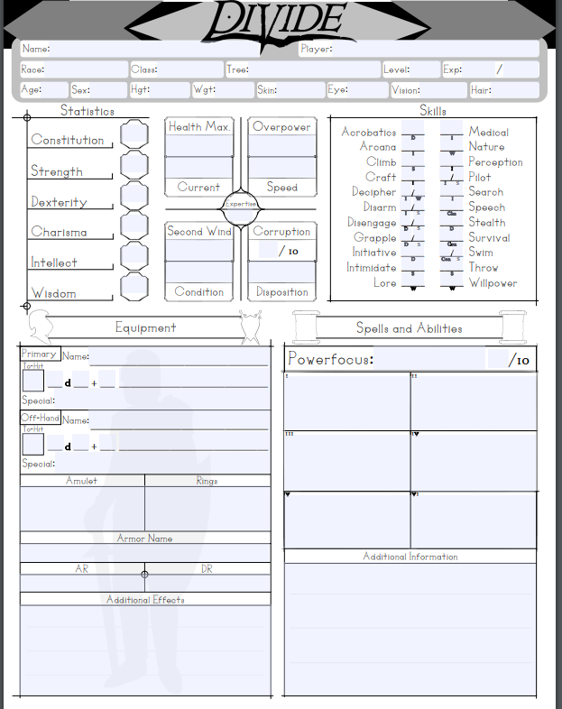

About Divide TTRPG
Divide TTRPG is an upcoming table top role-playing game that started as a humble passion project. Our journey began in 2015, with a group of middle school friends dreaming about creating a universe of their own. Drawing inspiration from an eclectic mix of sources – from Star Wars, Dark Souls, World of Warcraft, Skyrim, and Lord of the Rings, to the classic Dungeons and Dragons – we laid the foundation for Divide.
What started as notes and sketches in a spiral notebook soon grew beyond our wildest dreams. As more friends joined our games and provided their valuable feedback, the game evolved, matured, and expanded. Today, Divide boasts over 500 pages of rules, lore, and features, with more exciting additions on the horizon.
We believe that our strength lies in our roots. Our love for fantasy and gaming, our respect for the sources of our inspiration, and most importantly, the community that has grown with us – these are the ingredients that make Divide special. We hope you'll join us in this epic adventure.
About The Character Sheet
The Character Sheet for Divide began as a simple sketch. This sketch laid the foundation for another sketch that then got scanned and printed. This was just the start though, slowly as the sheet became more refined, and the rules of the game developed, the character sheet gained a character of it's own.
Once the first digital rendition of the character sheet was created, more and more revisions to it were made. As rules changed, the sheet changed with them. Just as much as the game itself has evolved, so has the character sheet. Now the sheet stands as an important piece of the game's history and a core item within it's functionality.